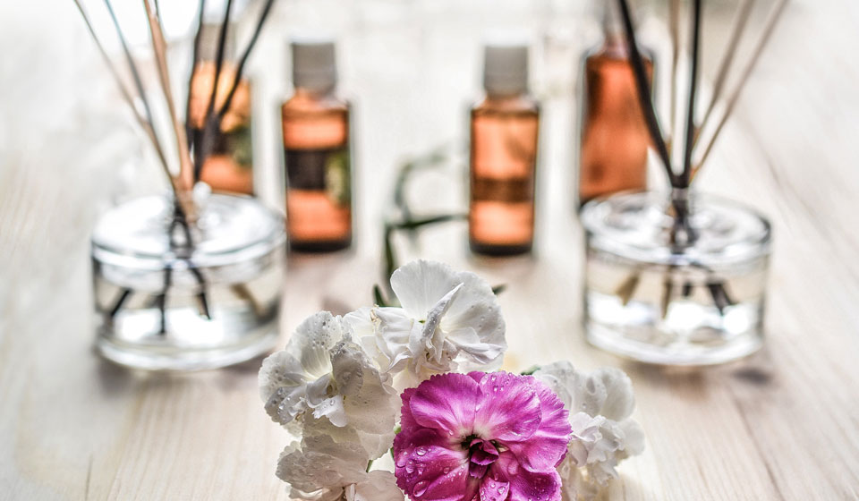

Пользу ароматерапии люди оценили еще с незапамятных времен и используют ее целебную силу по сегодняшний день. Если вы хотите раскрыть для себя метод ароматерапии, то эта статья именно для вас!
Что такое ароматерапия
Ароматерапия является одним из методов традиционной медицины, помогающих в оздоровлении, профилактике и лечение различных заболеваний при помощи эфирных масел. Суть заключается в лечении ароматами различных растений, которые действительно способны оказывать серьезное влияние на организм человека, а не только на его настроение. Для человеческого организма ароматерапия может осуществляться посредством проникновения ароматических веществ через дыхательные пути, слизистые оболочки и кожу. Но при этом, абсолютно все растительные эфирные масла при соблюдении правильной дозировки не оказывают негативного влияния на организм, не вызывают привыкания и снижения эффективности воздействия.
Влияние ароматерапии на организм человека
Воздействие ароматерапии, оказываемое на человеческий организм, сформировано двумя основными путями – нервно-рефлекторным и гуморальным.
Нервно-рефлекторный метод. Рецепторы обонятельной зоны носа, воспринимают запахи мгновенно, а затем передают информацию в центральную нервную систему – обонятельный центр мозга. Влияние ароматических молекул действуют как раздражители, которые в последствии регулируют эмоции человека и тонус нервной системы, способствуют восстановлению процессов саморегуляции организма.
Гуморальный метод. Этот механизм влияния эфирных масел связан с их воздействием на слизистую дыхательных путей. Так как легкие имеют достаточно развитую сосудистую сеть, поэтому их всасываемость эфирных масел в кровь и сосуды происходит намного быстрей, чем при приеме лекарственных препаратов в виде отваров трав или настоек. Структура кожи также позволяет легко проникать молекулам ароматических масел в кровь и лимфу, например, во время массажа.
Как правило длительность действия эфирных масел на организм находится в пределах около 20 минут, а затем они полностью испаряются, не оставляя никаких инородных веществ.
Методы применения ароматерапии
Ароматерапия, как метод, имеет свои принципы, которые позволяют организовать индивидуальный подход к каждому человеку. Благодаря огромному количеству видов эфирных масел, с выбором нужного варианта не проблем не возникает. Важно применять только понравившиеся запахи масел, так как они способны действовать на человека через его восприятие. Аромат каждого растения состоит из комплекса различных активных веществ, поэтому одно и тоже эфирное масло может использоваться для лечения разных заболеваний. При этом следует помнить о мерах предосторожности и дозировке. Малые дозы эфирных масел являются стимуляторами, а большие могут навредить жизненно важным процессам организма. Но при этом у эфирных масел есть и обязательные противопоказания: индивидуальная непереносимость аромата, аллергия, бронхиальная астма в стадии обострения, беременность (для некоторых соединений).
Методы применения эфирных масел подразумевают два основных способа: путем вдыхания и путем впитывания в кожу. Каждый из этих двух способов, позволяет добиться высоких терапевтических результатов.
Аромалампы
Аромалампы считаются одним из простейших способов применения эфирных масел в домашних условиях. Обычно они используются для ароматизации помещений и представляют собой сосуд-испаритель, в который необходимо налить теплую воду, добавить эфирное масло и только потом зажечь свечу. Количество капель эфирного масла будет зависеть от площади помещения. За основу возьмите расчет: 2 капли эфирного масла на 5 м кв. площади. При этом, вода в аромалампе не должна переходить в кипящее состояние, иначе действие аромата изменится. Правильная работа аромалампы, заключается в медленном подогревании воды за счет чего, воздух насыщается ароматом постепенно. Проводить такую процедуру необходимо в хорошо проветренном помещении при закрытых окнах и дверях.
Более эффективным вариантом станут дорогие аппаратные испарители, работающие от электричества. Они предпочтительны в медицине, в больших офисных помещениях, а также подходят для применения дома. Аппаратная ароматерапия более безопасна и физиологична для здоровья, ведь при создании дыхательной среды, в воздухе содержаться только летучие фракции эфирных масел, равносильные природной среде. Поэтому применение ароматерапии таким способом возможно даже для больных бронхиальной астмой.
Ингаляции
Метод ингаляций можно назвать самым распространенным лечебным способом простудных заболеваний. Процедура помогает уменьшить отечность, воспаление, убирает кашель, заложенность в области горла и носа. Данная ароматерапия разделяется на два вида: холодная и горячая.
При холодной ингаляции, аромат эфирного масла вдыхается из флакона либо путем нанесения пары капель на ткань. При этом дыхание должно быть глубоким, глаза желательно закрыть, а время процедуры не должно превышать 10 минут. Молекулы эфирных масел, попадая на слизистую оболочку носа, вызывают импульсы, которые отправляются в отдел головного мозга, где начинается процесс повышения сопротивляемости организма к инфекционным заболеваниям. Горячая ингаляция реализовывается при помощи специального устройства – ингалятора. Ингалятором может служить как обычная глубокая емкость с нагретой жидкостью, так и специальное устройство, работающее от электрической сети. Второй вариант ингалятора, конечно, будет более практичным и безопасным в применении.